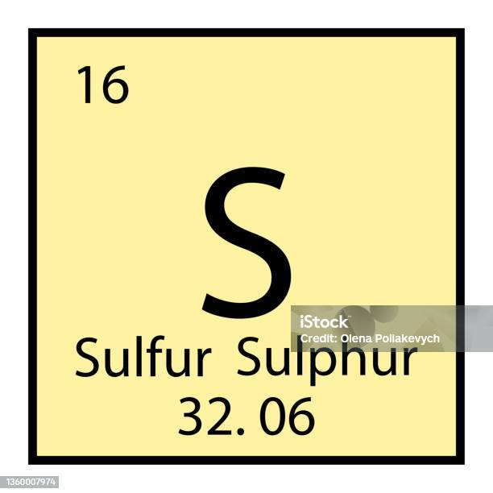

Azufre
El azufre es un elemento químico que se forma en las estrellas masivas, y en la Tierra se encuentra principalmente en las regiones volcánicas. Es muy utilizado en la producción de fertilizantes.
Usos del Azufre
-
Para producir ácido sulfúrico, que es un compuesto químico esencial en muchas industrias.
-
En la industria fotográfica (se utilizan compuestos de azufre como el tiosulfato de sodio (Na2S2O3) y de amonio ((NH4)2S2O3)).
-
En forma de sulfitos para el blanqueamiento del papel y como antioxidantes de alimentos
-
Como laxante y exfoliante cuando forma parte del sulfato de magnesio (MgSO4).
-
Otros usos:
Se encuentra en su forma elemental y en mayor cantidad en zonas volcánicas y cerca de las aguas termales.
Tabla Periodica.
